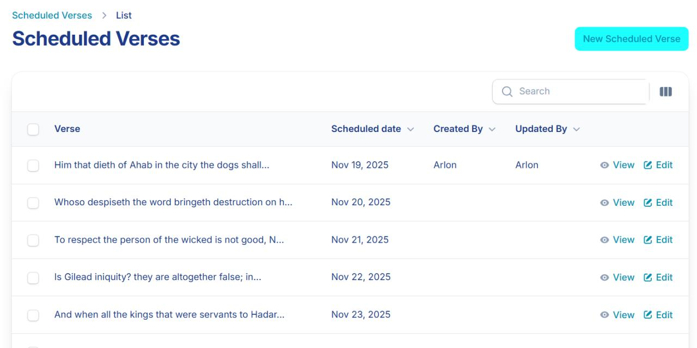

01
Published Games
- Lead developer — built resource loops, building & planting mechanics, and player progression using OOP patterns.
- Balanced economy using analytics from 15+ tracked engagement metrics.
- Architected the full data layer: SQLite offline, Unity Services cloud save, and content delivery with addressables.
- Built Unity Cloud Code serverless backend — expedition matchmaking, friend donation systems, and live game logic.
City of Faith Admin CMS
Web · Live Production · Laravel / PHP

- Laravel backend powering live game content — manages all the bible verses and quizzes with automated daily rotation to Unity's cloud.
- Content management system for mobile game with task scheduling, role-based authentication, activity logs, and Cloudflare R2 backups. Eliminated 12+ hours/month of manual work via.
- Team Lead & Lead Developer — designed and developed a skill-based paint charge combat system inspired by Splatoon, iterating through paper and game prototypes.
- Led a 10-member team across code, art, and audio. Achieved highest engagement score at the university tech showcase.
A Slime Out of Time
PC · Solo · Unity / C#

- Solo-developed 2D pixel art platformer — designed and implemented all gameplay systems, dialogue, and progression.
- Built a platformer experience using state machines, Unity Timeline cutscenes, NPC interactions and dialogue with Ink, and a Celeste-inspired tutorial flow.